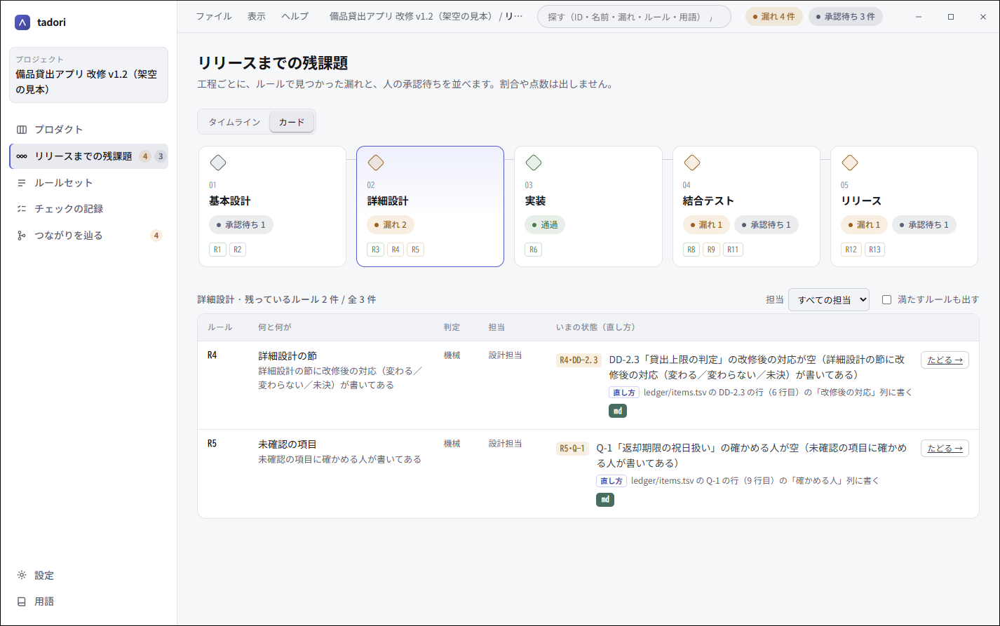
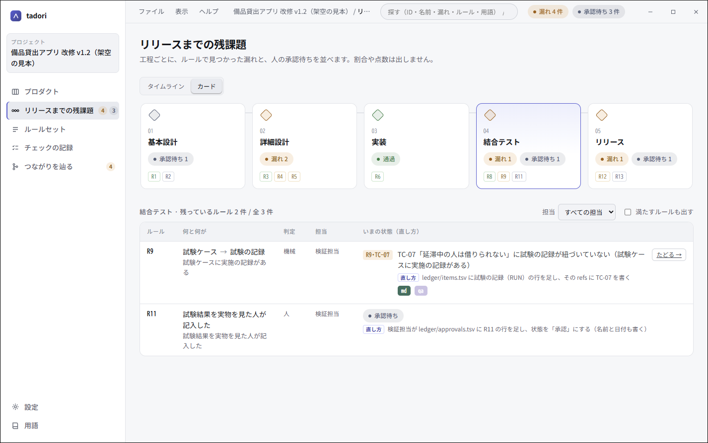
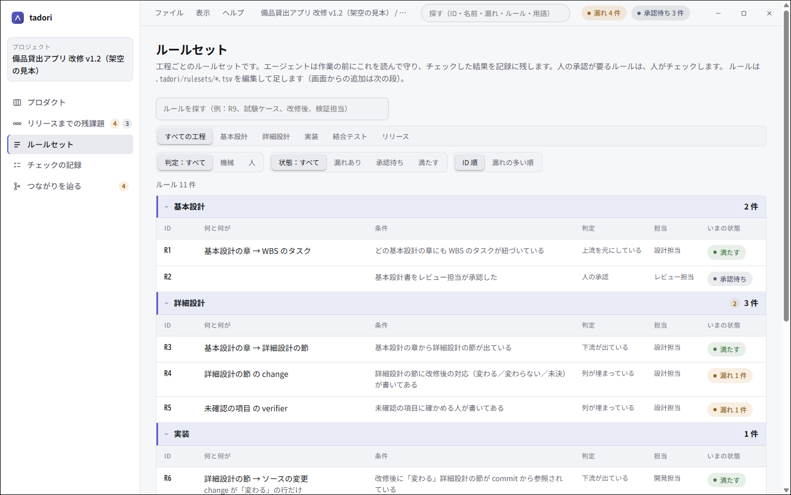
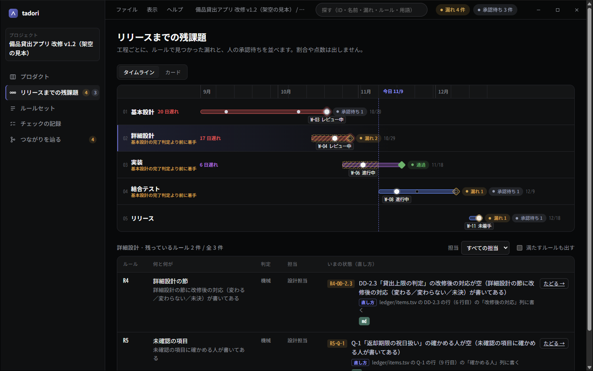

リリースまでの残課題を、
つながりで見る。
tadori（辿り）は、仕様の 1 文から試験ケース・実施の記録・指摘・再発防止までを ID でつなぐ、git 上の台帳です。 工程ごとのルールで「つながりが無い所（漏れ）」を出し、誰が・どのファイルの何行目に・何を書けば消えるかまで示します。
無料・MIT ライセンス。Node.js 22 以上が要ります。データは PC の中の TSV だけに置き、外へは送りません。

記録はある。つながりが、人の頭の中にしかない。
不具合が出たとき「当時気づけたのか」「なぜ試験で拾えなかったのか」を説明するには、設計書・試験書・課題票・レビューを掘り返すことになります。 tadori は、それぞれの記録を ID でつなぎ、工程の出口で「この工程は終わったと言ってよいか（完了判定）」を止めているものを並べます。
- つながりは ID だけで決める台帳に書かれた ID でつなぎ、推測でつながない。
- 漏れを認めるのは人tadori が出すのは漏れの一覧まで。承認も試験の合否も人が書く。
- 割合や点数を出さない出すのは漏れの中身・承認待ち・ステータス・遅れた日数という事実だけ。
- 正本を増やさない設計書や試験シートは元の道具に置いたまま。台帳には場所だけを書く。
- git 上の TSVtadori が無くても人が読める。変更は commit で残り、push は人が確かめてから。
- 手元で完結画面は PC の中（127.0.0.1）だけ。外のサービスとは同期しない。
工程の出口で止まっているものと、その直し方
リリースまでの残課題
工程ごとに、ルールで見つかった漏れと、人の承認待ちを並べます。 タイムラインでは予定の期間・いまのタスク・遅れた日数と、前の工程の完了判定より前に着手したことが一目で分かります。
- 工程は会社やプロダクトごとに自由に決められる
- 予定を入れない案件は、工程の数が分かるカード表示で

漏れごとに、担当と直し方
「TC-07 に試験の記録が紐づいていない」のような漏れごとに、担当と、どのファイルの何行目のどの列に何を書けば消えるかを出します。
md / qa のアイコンから、仕様の原本を md-business で開いたり、試験ケースを git-qa で実施したりできます（設定で URL の形を書いたとき）。

つながりを辿る
受入で出た指摘から、試験ケース・観点・詳細設計・基本設計・WBS のタスクまで、上流と下流を工程の順に並べます。切れている所は赤、前のチェックで漏れていて今は直っている所は「対応済み」と出ます。
会議では #trace-F-02 のような URL を渡すだけで、同じ線を一緒に見られます。

工程ごとのルールセット
「観点ごとに試験ケースがある」「詳細設計の節に改修後の対応が書いてある」のようなルールを、工程ごとに TSV で持ちます。判定は 4 種類（下流がある・上流を元にしている・列が埋まっている・人の承認）。
ルールはエージェントが書き、人が画面で読んで確かめます。1,000 行を超えても、探す・絞る・並べ替えるで追えます。

エージェントが、画面を指して案内する
MCP の道具で、AI エージェントが使い方・残課題・漏れ・つながりを読めます。案内するときは、画面の中の専用カーソルで指して、黄色の枠と一言で示します。
人のマウスは使いません。エージェントが動かしている間も、自分のマウスで同じ画面を触れます。

ライトとダーク
会議で画面を共有しやすいライトが既定です。ダークと「OS に合わせる」も選べます。選んだものは、その PC だけに効きます。
ほかのアプリ（md-business など）や git pull で台帳が書き換わると、画面はその場で描き直されます。

架空の案件で見る、tadori の使いどころ
どれも架空の「備品貸出アプリ 改修 v1.2」で再現しています。実在の案件のデータは使っていません。
4 つの手順で、手元の案件に入れる
入れる
ダウンロードから、OS と CPU に合うインストーラーを入れます（Node.js 22 以上が要ります）。
始める
「ファイル › 新しく始める…」で案件のフォルダを選ぶと、工程・ステータス・台帳のひな形が置かれます。
書く
工程・WBS・台帳の行（ID と、何を元にしたか）・ルールを TSV に書きます。エージェントに書かせることもできます。
見る
残課題の画面で漏れと直し方を見て、直したら、もう一度確かめます。変更は git の commit で残ります。
よくある質問
tadori は何をする道具ですか？
設計書の章・試験ケース・実施の記録・指摘などを ID でつなぎ、工程ごとのルールで「つながりが無い所（漏れ）」を一覧にします。漏れごとに担当と、どのファイルの何行目に何を書けば消えるかを示します。
データはどこに置かれますか？外へ送られますか？
案件のフォルダの中の TSV（git で管理）に置きます。画面はその PC の中（127.0.0.1）だけで開き、外のサービスとは同期しません。
tadori が「漏れを直した」と判定しますか？
しません。tadori が出すのは漏れの一覧までです。「確かにそこが漏れていた」「直った」と認めるのは人です。承認や試験の合否も、人が記録します。
進み具合を割合や点数で出しますか？
出しません。割合を出すと、それを上げるための形だけの行が増えるためです。出すのは漏れの中身と件数・承認待ち・ステータス・遅れた日数という事実だけです。
AI エージェントから使えますか？
使えます。MCP の道具で使い方・残課題・漏れ・つながりを読めます。画面の中の専用カーソルで、人のマウスを使わずに画面を指して案内することもできます。
動かすのに何が要りますか？
Node.js 22 以上が入った macOS（Apple シリコン・Intel）か Windows（x64・ARM）です。インストーラーは無料で、ソースは MIT ライセンスで公開しています。